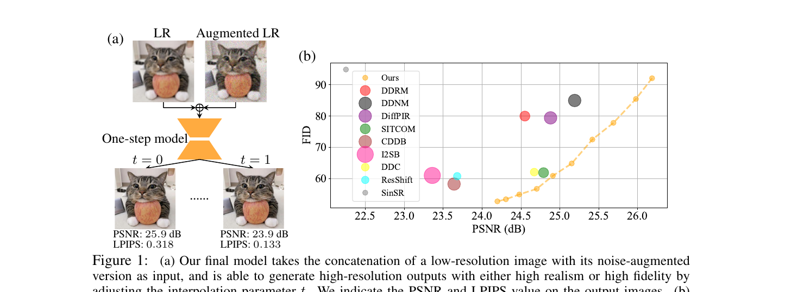
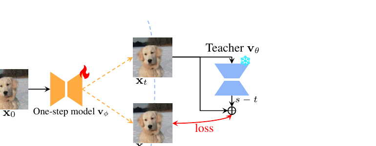

One-Step Flow for Image Super-Resolution with Tunable Fidelity-Realism Trade-offs

t 即可在 t=0（高保真，PSNR 25.9）和 t=1（高真实感，LPIPS 0.133）之间切换。(b) ImageNet 256×256 上各类扩散/flow 超分方法的 FID-PSNR 对比，气泡半径表示所需 NFE（函数求值次数）——OFTSR（橙色）用 1 次 NFE 就贴着帕累托前沿走完整条曲线。（论文 Fig. 1）
1. 出发点 (Motivation)
图像超分（super-resolution, SR）这几年被扩散 / flow 模型统治，因为它们生成的细节比传统回归式 CNN 更「真」。但这类方法卡在两个互相矛盾的需求之间：
- 要质量就得多步。扩散/flow 要几十上百步迭代采样才有好的感知质量，算力开销大；步数砍到个位数，输出就会「回归到均值」——变糊、变保守。
- 要单步就得牺牲灵活性。为了提速，大家把多步采样蒸馏成一步（如 BOOT、SinSR、DAVI、OSEDiff）。但这些单步蒸馏方法都把「保真度-真实感」权衡锁死成一个固定点：你拿到的一步模型要么偏锐利、要么偏保真，没法在推理时调。
这里的「保真度-真实感权衡」（perception-distortion tradeoff, Blau & Michaeli 2018）是图像复原的根本矛盾：数学上已证明不可能同时把「像 ground truth」（低失真、高 PSNR）和「看起来真实」（低 LPIPS/FID）都做到最好。医学影像、遥感、影视修复等不同场景对这两者的偏好截然不同——医学影像宁可保真也不要模型「脑补」，而影视修复要的就是细节真实。所以一个能在推理时调权衡的单步模型才有实用价值。
多步扩散其实天然能调这个权衡：调 NFE 就行（步数少→偏保真，步数多→偏真实感）。OFTSR 想问的问题是：能不能把多步模型里「沿采样轨迹滑动」的这个连续权衡能力，原封不动地压进一个单步网络，用一个超参 t 来调？
答案是两阶段方案：(1) 先训一个噪声增广的条件 rectified flow当教师；(2) 用一个特制蒸馏约束，把教师沿 ODE 轨迹的「整条权衡曲线」蒸进一步学生里。
2. 方法 (Method)
2.1 背景：rectified flow 是什么
Rectified flow（Liu et al. 2022）是一类基于 ODE 的生成模型。给定初始分布 \(p_0\) 和目标分布 \(p_1\)，它训练一个神经网络去拟合一个速度场 \(v_\theta\)：
—— 翻译：在 $x_0$（起点）和 $x_1$（终点）之间画一条直线，$x_t$ 是这条线上 $t$ 处的点。网络要学会在每个 $x_t$ 处预测「指向终点的方向和速度」，而这个真值就是直线的常数斜率 $x_1 - x_0$。训练好后，从 $x_0$ 出发解 ODE $\frac{dx_t}{dt} = v_\theta(x_t,t)$ 走到 $t=1$ 就生成了样本。
相比扩散模型，flow 的关键优势是：初始分布 \(p_0\) 不必是高斯。这就给超分留了空间——能不能直接学一条从「LR 图分布」到「HR 图分布」的 flow？
2.2 第一阶段：噪声增广的条件 flow（教师）
直接学 LR→HR 的 flow 会崩塌：训练时每个 LR 被强行拉向唯一的 HR，模型学成确定性映射，丢掉了「一个 LR 对应多个合理 HR」的多样性（论文 Tab. 7 验证了直接做效果差）。
OFTSR 的修法是给 LR 加噪，扩展初始分布的支撑集。用 Variance-Preserving（VP）方式加噪：
—— 翻译：把 LR 图按 $\sqrt{1-\sigma_p^2}$ 缩一下，再掺进强度为 $\sigma_p$ 的高斯噪声当作 flow 的起点 $x_0$。$\sigma_p$ 越大，起点越「随机」，模型能脑补的多样性越大，但 LR 里的信息也丢得越多。VP 形式保证总方差不变。
这个 VP 公式在代码里是一行 GaussianNoise，与 Eq. (4) 一字不差：
repo/fm/measurements.py:L168-L174 — gaussian_VP 加噪算子，即论文 Eq. (4)
@register_noise(name='gaussian_VP')
class GaussianNoise(Noise):
def __init__(self, sigma, **kwargs):
self.sigma = sigma
def forward(self, data):
return np.sqrt(1 - self.sigma**2) * data + self.sigma * torch.randn_like(data, device=data.device)
加噪丢了信息怎么办？把原始 \(x_{LR}\) 沿通道维拼回去当条件输入。于是教师的训练目标是：
—— 翻译：和普通 rectified flow 一样学速度场，只是把「噪声起点 $x_0$ → 高清图 $x_1$」当作要走的路径，并且每一步都把干净的 LR 图 $x_{LR}$ 拼在输入里当条件。$D$ 是 ℓ1 或 ℓ2 距离（论文发现 ℓ1 更好）。
这个 VP 公式很「统一」：\(\sigma_p = 0\) 退化成 InDI 的最小增广，\(\sigma_p = 1\) 就变成 SR3 的训练方式。代码里加噪 + 拼通道的逻辑在这里：
repo/fm/flow_matching.py:L100-L111 + L84-L99 — get_train_tuple_IR 加噪 + model_forward_wrapper 拼通道条件
def get_train_tuple_IR(self, batch, mask=None, **kwargs):
x = batch['gt'].to(self.device) # x1 = HR
yn_ = batch['lq'].to(self.device) # LR
self.cond = yn_.detach().clone() # 保留干净 LR 当条件
yn = self.noiser_pertub(yn_) # Eq.(4): VP 加噪得到 x0
self.x1 = x
self.x0 = yn
def model_forward_wrapper(self, model, x, t, **kwargs):
# 把 x 与条件 LR 沿通道拼接后再喂模型
x = torch.cat([x, self.cond], dim=1) if self.flow_config.use_cond else x
model_output = model(x, t*999, label, augment_labels)
return model_output[:, :3]
2.3 第二阶段：ODE 轨迹对齐蒸馏（核心创新）

为什么这样设计能保住「整条权衡曲线」？关键观察（Fig. 6 与前人工作）：沿 ODE 轨迹，从中间态 \(x_t\) 一步估计终点 \(x_{t_1}\)，估计值本身就躺在一条保真-真实感曲线上——\(t\) 越大（越接近 1）细节越丰富、LPIPS 越低（真实感好）；\(t\) 越小（越接近 0）越糊但 PSNR 越高（保真好）。所以只要让学生忠实复现教师的整条轨迹，学生就自动继承了用 \(t\) 调权衡的能力。
形式化：给定同一输入 \(x_{0,LR}\)，对 \(s > t\)，要求学生产生的 \(x_t, x_s\) 落在教师定义的同一 ODE 轨迹上：
—— 翻译：教师视角下，从轨迹上的 $x_t$ 出发，沿教师速度 $v_\theta$ 走 $(s-t)$ 这么长的一步，应该到达 $x_s$。这就是一阶 Euler 离散的 PF-ODE。
而 \(x_t, x_s\) 都由一步学生算出（注意学生永远从 \(x_0\) 出发，只是把目标时刻当输入）：
—— 翻译：学生不沿轨迹爬，而是「一步到位」——从固定起点 $x_0$ 直接预测时刻 $t$ 处的状态 $x_t$。这正是单步模型的本质：把任意目标时刻 $t$ 当成可调旋钮。
把 (7) 代入 (6)，整理出对学生的约束（这是代码里实际优化的 v 空间形式）：
—— 翻译：把「学生两个时刻的速度差」和「教师速度与学生速度的差」用 $(s-t)/s$ 这个比例系数挂钩。它是 Eq.(6) 轨迹约束的等价改写，只是写成速度（$v$）而非状态（$x$）的关系，数值上更稳。
设 \(dt = s - t\)，加上 stop-gradient，得到最终蒸馏损失：
—— 翻译：让学生在时刻 $s$ 的速度，去匹配一个「目标速度」——这个目标速度是「学生在 $t$ 的速度」朝「教师速度」方向修正 $dt/s$ 比例后的结果。SG[·] 是停梯度，只让 $s$ 这一支回传梯度，防止训练塌掉。$t>0$ 保证 $dt/s$ 不会除零。
代码里这正是默认的 v_boot 分支，与 Eq. (9) 完全对应（delta_lambda = dt/s）：
repo/distill_fm.py:L390-L423 — 学生双时刻预测 + 教师 RK2 求速度 + v_boot 蒸馏损失（Eq. 8/9）
v_pred_t = flow.model_forward_wrapper(flow.model, x_0, t) # 学生在 t 的速度
v_pred_s = flow.model_forward_wrapper(flow.model, x_0, s) # 学生在 s 的速度
xt = x_0 + torch.einsum('b,bijk->bijk', t, v_pred_t.detach()) # Eq.(7): 学生算出 x_t
with torch.no_grad(): # 教师不回传梯度
v_teacher_t = flow.model_forward_wrapper(flow.teacher, xt, t)
if boot_config.teacher_solver == 'rk2':
# r=0.5 -> midpoint；r=1 -> Heun；r=2/3 -> Ralston
pred = v_teacher_t.clone()
x_2 = xt + boot_config.rk2_r * torch.einsum('b,bijk->bijk', t_step, pred)
t_2 = boot_config.rk2_r * s + (1 - boot_config.rk2_r) * t
pred_2 = flow.model_forward_wrapper(flow.teacher, x_2, t_2)
v_teacher_t = (pred + 1/(2*boot_config.rk2_r) * (pred_2 - pred))
# v_boot: Eq.(9)，delta_lambda = dt/s
delta_lambda = (t_step / s)[..., None, None, None]
loss_distil = F.mse_loss(v_pred_s,
(v_pred_t + delta_lambda*(v_teacher_t - v_pred_t)).detach(),
reduction='mean')
2.4 对齐损失与边界损失
光有蒸馏损失还不够稳。OFTSR 再加两项（借鉴 BOOT 的边界条件思想）：
- 对齐损失 \(\mathcal{L}_{align}\)：让学生从 \(x_0\) 的预测，与教师从 \(x_t\) 的预测在「预测的终点」上一致，权重 \((1-t)^2\)：
—— 翻译：学生（从起点看 $t$）和教师（从轨迹上的 $x_t$ 看 $t$）都该指向同一个终点 $x_1$；把两者速度拉近，权重 $(1-t)^2$ 是因为换算到终点空间时会乘这个系数。$t=0$ 时它退化成 BOOT 的边界损失。
- 边界损失 \(\mathcal{L}_{BC}\)：在 \(t=0\) 处强制学生 = 教师（因为训练时几乎采不到 \(t=0\)，单独补一项）。
总目标：\(\mathcal{L}(\phi) = \mathcal{L}_{distill} + \lambda_{align}\mathcal{L}_{align} + \lambda_{BC}\mathcal{L}_{BC}\)，默认 \(\lambda_{align}=0.01\)、\(\lambda_{BC}=0.1\)。
2.5 推理：一次前向 + 一个旋钮
训练完，单步学生 \(v_\phi\) 一次前向就出 HR，权衡由 \(t\) 控制：
—— 翻译：从加噪起点 $x_0$ 出发，加上学生预测的「残差速度」，直接得到高清图。想保真就把 $t$ 调小（输出偏向 LR 的均值，PSNR 高），想真实感就把 $t$ 调大（细节丰富，LPIPS 低）。整个推理 NFE = 1。
repo/fm/flow_matching.py:L232-L244 — 单步推理，对应 Eq. (13)
def image_restoration_t_(self, x_0, yn, t):
samples = []
for i in range(int(np.ceil(x_0.shape[0] / self.psnr_batch_size))):
batch_x0 = x_0[i*self.psnr_batch_size:(i+1)*self.psnr_batch_size]
vec_t = torch.ones(batch_x0.shape[0],).to(self.device) * t # 旋钮 t
self.cond = yn.detach()[...]
with torch.no_grad():
v_pred = self.model_forward_wrapper(self.model, batch_x0, vec_t)
sample = batch_x0 + (self.T - self.eps) * v_pred # x_0 + (T-t)*v
samples.append(sample.cpu())
return torch.cat(samples, dim=0)
t：从 t=1（真实感最高，LPIPS 0.055 / PSNR 27.66）连续滑到 t=0（保真最高，LPIPS 0.160 / PSNR 30.03）。注意 PSNR 单调升、LPIPS 单调降——这正是把多步扩散「调 NFE 换权衡」的能力压进了单步推理。（论文 Fig. 3）
3. 结论 (Key findings)
在 FFHQ 256×256、DIV2K、ImageNet 256×256 和多个真实世界 SR 数据集上（4× 超分）：
- 单步达到甚至超过多步 SOTA。FFHQ 上 OFTSR 蒸馏版（\(t=1\)，NFE=1）FID 36.02、LPIPS 0.055，优于需要 100 NFE 的 DiffPIR（FID 44.49）和 20 NFE 的 SITCOM（FID 43.00）。ImageNet 上 \(t=1\) 单步 LPIPS 0.135 / FID 52.69，是表中单步方法的最佳之一。
- 整条权衡曲线可调。同一个单步模型在 FFHQ 上：\(t=0\) 时 PSNR 31.25（保真最高），\(t=1\) 时 LPIPS 0.055（真实感最高），\(t=0.5\) 居中（PSNR 29.95 / LPIPS 0.093）。这是其他单步蒸馏方法做不到的。
- 蒸馏几乎无损 + 通用。把蒸馏套到 ResShift 教师上，单步学生 FID 60.64 反超原版 SinSR（FID 94.90）；套到 SD3.5 的 DiT4SR 教师上，RealLQ250 的 CLIPIQA 0.7252、LIQE 4.1122 与最新 SOTA（TSDSR）竞争。
- 训练 + 推理都便宜。蒸馏 ResShift 仅需 ~0.39 天（A100），远少于 SinSR 的 2.57 天；单步推理 0.09s，与 SinSR 同档。
- 关键消融：(i) 加噪是必须的（\(\sigma_p=0\) 时 FID 110），但 \(\sigma_p\) 过大会让 PF-ODE 更弯、需要更多 NFE；FFHQ 选 \(\sigma_p=0.1\)。(ii) 步长 \(dt\) 不是越小越好，选 \(dt=0.05\)。(iii) 自家蒸馏损失比 BOOT 损失 LPIPS 好 0.1 以上（BOOT 0.483 vs Ours 0.065）。
4. 实现细节 (Implementation notes)
- 论文 Eq. (9) 写在 \(v\) 空间，但与 BOOT 推导路径同源。代码
distil_loss有三个分支：boot（x 空间，对应原始 BOOT）、v_boot（v 空间，论文 Eq. 9）、pinn（PINN 式残差损失）。默认配置用的是v_boot（configs/dis_fm_ffhq.yml:L119），不是名字里带 boot 就等于跑 BOOT——别被分支名误导。repo/distill_fm.py:L389-L429。 - 教师默认用 midpoint（RK2, r=0.5）解一步，而非 Euler。配置
teacher_solver: rk2+rk2_r: 0.5（dis_fm_ffhq.yml:L117-L118）。论文正文也说主实验用 midpoint，但 Tab. 8 消融里 Euler 在 \(t=1\) 的 LPIPS（0.065）反而略好于 midpoint（0.056 是另一指标方向）——RK2 主要在对齐/边界损失开启时更稳。 - 学生从教师权重初始化，不是从头训（
flow.teacher = copy.deepcopy(unet)后requires_grad_(False)，学生unet继续训）。distill_fm.py:L241-L242。 - stop-gradient 的位置很关键：
v_pred_t.detach()+ 整个目标.detach()，只让 \(s\) 那一支v_pred_s回传。漏 detach 会让两支互相追逐、训练发散。distill_fm.py:L394-L423。 - 时间 \(t\) 喂进网络前乘了 999（
model(x, t*999, ...)，flow_matching.py:L98）——这是为了复用 Guided-Diffusion / DDPM 那套以「0–1000 整数步」为条件的 UNet，把连续 \(t\in[0,1]\) 映射回离散步索引区间。 - ⚠️ 配置里的
sigma_pertubation与论文最优值不一致：dis_fm_ffhq.yml:L33写的是sigma_pertubation: 1.，但论文 Tab. 7 在 FFHQ 上选的是 \(\sigma_p=0.1\)（FID 30.54 最优）。仓库里发布的 distill 配置用 \(\sigma_p=1\)，复现论文表格数字时需注意对齐到对应教师 checkpoint 实际训练用的 \(\sigma_p\)，否则结果会偏。 - ℓ1 比 ℓ2 好用在第一阶段（
loss_type: l1，dis_fm_ffhq.yml:L73），但蒸馏阶段消融默认用 ℓ2。两阶段损失类型不同，照搬会踩坑。 - 训练用 Adam + 1k 步线性 warmup + lr 1e-4，两阶段相同；梯度做了
nan_to_num清洗（losses.py:L65），说明 flow 蒸馏数值上确实容易出 NaN。
5. 批判性总结 (Critical assessment)
Strengths
- 「整条曲线 vs 一个点」是真正的差异化。绝大多数单步蒸馏（SinSR/OSEDiff/DAVI）只能给你曲线上固定一点；OFTSR 用一个超参 \(t\) 在推理时连续滑动，且 PSNR/LPIPS 单调变化（Fig. 3），这个能力在医学/遥感等场景有实打实的价值。
- 蒸馏算法与教师解耦，通用性强。同一套损失能套自训 flow、ResShift、SD3.5-based DiT4SR 三种教师，且都拿到有竞争力的单步结果——说明这不是针对某个架构调出来的 trick。
- 训练极省。蒸馏 ResShift 只要 5k 步 / 0.39 天就超过 SinSR，因为不需要像 SinSR 那样在线模拟教师 ODE 轨迹，也不像 DAVI 那样额外训一个 fake score。
- 数学推导干净。从 Eq.(6) 轨迹约束到 Eq.(9) 损失，每步都能对上代码，paper↔code 一致性高。
Limitations / open questions
- \(t\) 与权衡的对应关系是经验性的、非校准的。Fig. 3 显示 \(t\) 单调控制权衡，但论文没给「想要某个目标 LPIPS/PSNR 该取哪个 \(t\)」的解析关系；不同数据集/教师上 \(t\) 的「甜点」不同（FFHQ 与 ImageNet 的 \(t=0.5\) 数字差异很大），实际用还得手动扫。
- \(\sigma_p\) 与 NFE 的耦合是个隐性成本。加噪强度大→PF-ODE 更弯→第一阶段教师采样要更多 NFE（Tab. 7：\(\sigma_p=1\) 需 44 NFE）。教师本身的质量上限会传导给学生，但论文没深入分析「教师越弯、蒸馏越难」这条链路。
- 真实世界 SR 上 \(t<1\) 退化明显。Tab. 4 里 RealSR 上 \(t=0.5\)、\(t=0\) 的无参考指标（MUSIQ/MANIQA/CLIPIQA）掉得很厉害（如 CLIPIQA 从 0.589 跌到 0.313）——可调权衡在真实退化场景下，偏保真端基本不可用，实际只有 \(t\approx1\) 那一端有竞争力。这与「整条曲线可用」的卖点有张力。
- 结论部分单薄。Conclusion 只有一段套话，没有 limitation/future work 的诚实讨论，对一篇方法论文略可惜。
- 配置与论文数值的不一致（见 §4 的 \(\sigma_p\) 问题）会增加复现摩擦。
When to use / not use
- 适合：需要单步快速超分、且希望在部署时按场景调「保真 vs 真实感」的应用（影视上采样、可交互修图）；想把已有扩散/flow 超分教师压成一步又不想丢调节能力。
- 不适合：只追求单一指标（要么纯 PSNR、要么纯感知）的场景——那直接训一个对应目标的单步模型更简单；以及对真实世界强退化要求「高保真端也可用」的场景（\(t<1\) 在真实数据上退化大）。
Further reading
- 蒸馏思路的直接前身：BOOT（Gu et al. 2023，signal-ODE 自举蒸馏）、PINN 式蒸馏（Tee et al. 2024）。
- 同期相关的 flow map / 自蒸馏：MeanFlow（Geng et al. 2025）、AlignYourFlow（Sabour et al. 2025）——论文 §B.2 说自家损失是其离散时间对应。
- 超分单步蒸馏对照组：SinSR（蒸 ResShift）、DAVI（VSD + 数据一致性）、OSEDiff / TSDSR（SD-based 单步）。
- 理论根基：Blau & Michaeli 2018 的 perception-distortion tradeoff。
讨论 / Comments
评论托管在本仓库的 GitHub Discussions, 需 GitHub 账号。